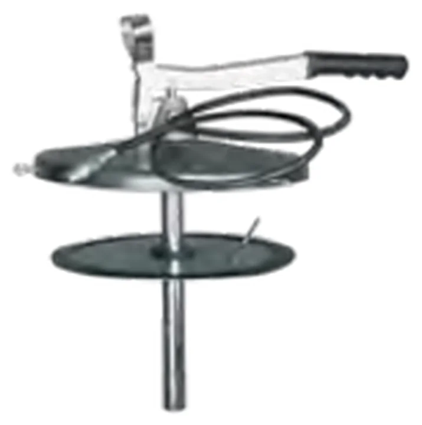

GROZ · Greasing Equipment
Grease Filler Pump High Pressure
CAT NR GFP/HP-03/PRO · ORD NR 44230
| CAT NR (catalogue number) | GFP/HP-03/PRO |
|---|---|
| ORD NR (order number) | 44230 |
| Box quantity | 6 |
| Drum cover diameter | 12" (310 mm) |
| Follower plate dimensions I.D. grommet | 1" |
| Follower plate dimensions O.D. plate | 11-11/32" |
| Follower plate dimensions O.D. steel end | 9-1/2" |
| Pail capacity | 20 kg / 25-50 lb |
| Pump length below drum cover | 13.11/16" (348 mm) |
| Type of follower plate | Rubber Lining |
Open in the catalogue The catalogue PDF, page 122
From the GROZ Fluid Handling CC-07 catalogue. Not yet verified: these details were read from the printed catalogue automatically; check the catalogue page before ordering.